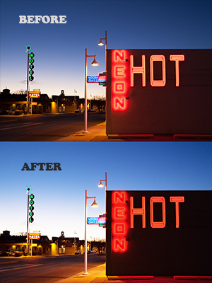
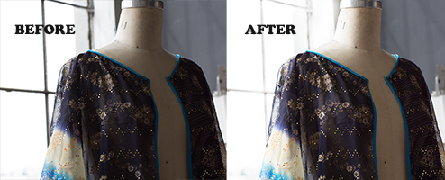
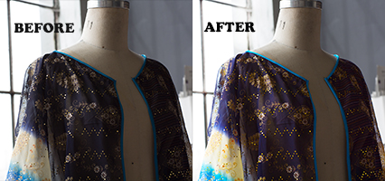

Practice 7: Photoshop
Working with Selections
Selection Basics
Quick Selection & Lasso Tools
Finetuning Selections
Selection Basics

Return to Top
Using the Quick Selection & Lasso Tools

Finetuning Selections & Masking

Return to Top
Return to Main Photoshop Page